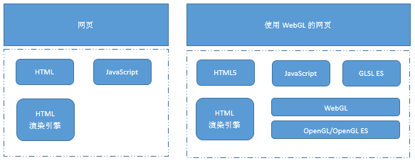
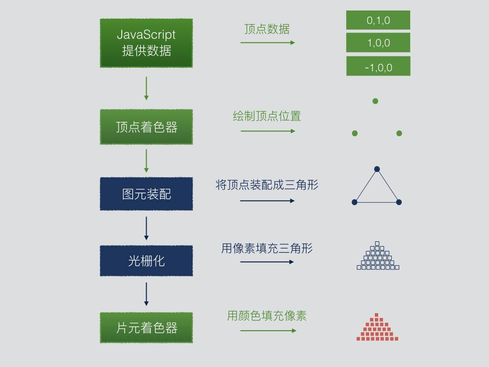

# 《WebGL 编程指南》
这本书写得不错，很适合入门 WebGL，作者写的通俗易懂，是选择图形学方向的必备书籍。由于本人只限于了解 WebGL 以及一些简单的使用，所以这篇文章只是入门级别，希望大家读后可以对 WebGL 有一定程度的了解。
本文分为以下几个方面来入门 WebGL：
- WebGL 基础知识
- WebGL 渲染流程分析
- WebGL 核心 api
- WebGL 小实战
# WebGL 基础知识
WebGL，是一项用来在网页上绘制和渲染复杂三维图形，并允许用户与之交互的技术。你只需要一个文本编辑器和一个浏览器，就可以开始编写三维图形程序了。
WebGL 的技术规范继承自免费和开源的 OpenGL 标准，而后者在计算机图形学、电子游戏、计算机辅助设计等领域已被广泛使用多年。在某种意义上，WebGL 就是 Web 版的 OpenGL。WebGL 中所有关于着色器的编程，底层都是使用 OpenGL 语法，所以需要书写 OpenGL 语言，这些代码可以写成字符串，也可以写在单独的文件中引入进来。
WebGL 只能绘制 3 中图形：点、线、三角形，其他的图形都是在这 3 中图形的基础上衍生出来的。
WebGL 程序的结构如下图所示。

# WebGL 程序运行流程
- 根据 canvas 元素，获取 WebGL 绘图上下文。
- 新建顶点着色器
- 创建片元着色器
- 初始化着色器
- 创建着色器对象
- 向着色器对象中填充着色器程序的源代码
- 编译着色器
- 创建程序对象
- 为程序对象分配着色器
- 连接程序对象
- 使用程序对象
- 设置 canvas 背景色
- 清空 canvas
- 绘图
其中初始化着色器部分对所有程序都是通用的，可以抽离封装成一个公共部分。
# WebGL 核心 api
- 顶点着色器
- 用来指定点的位置和尺寸。
- attribute 给顶点着色器声明变量，可以由 js 传递顶点信息。
- 片元着色器
- 用来指定点的颜色。
- 片元可以理解成显示在屏幕上的一个像素。
- uniform 给片元着色器声明变量，可以由 js 传递片元信息。
- WebGL 坐标系统（右手坐标系）
- x 轴 水平向右。
- y 轴 垂直向上。
- z 轴 垂直屏幕向外。
- 缓冲区对象
- WebGL 系统中的一块内存区域。
- 可以一次性地向着色器传入多个顶点的数据。
- 图形移动，旋转和缩放
- 通过顶点的变换，重新绘制图形，主要在于编写顶点坐标移动的变换算法。
- 使用变换矩阵来替代数学表达式，可以更方便的处理位置变换。可以将多个基础矩阵的变换，可以建模成一个复杂的变换矩阵。
- 着色器内置了矢量和矩阵运算功能。
- 颜色与纹理
- 图形绘制流程，绘制顶点坐标，连接顶点坐标（图形装配），光栅化（将几何图形转化成片元(像素)），逐片元渲染着色器。
- 光栅化，发生在顶点着色器和片元着色器之间的从图形到片元的转化，又称为图元光栅化。
- 纹理映射，将图片映射到三维对象的表现上。
- varying 变量，可以在顶点着色器和片元着色器中共享数据。
- 三维世界
- 立方体都是由多个三角形构成。
- 视点和视线
- 观察者的位置：视点。
- 从视点出发沿着观察方向的射线：视线。
- 可视范围
- 只有可视范围内的对象才会进行绘制，这也是基本的降低程序开销的手段。
- 可视空间
- 长方体可视空间，由正射投影产生。
- 无法产生近大远小的视觉效果。
- 四棱锥（金字塔）可视空间，有透射投影产生。
- 可以产生近大远小的视觉效果，具有透视感。
- 长方体可视空间，由正射投影产生。
- 光照
- 现实世界中，当光照射到物体省时，物体的明暗程度并不一致，物体还会在地面上留下影子，这就需要根据光照来计算对应的颜色。
- 光源类型
- 平行光（太阳光）
- 点光源（点灯泡）
- 环境光（场景中被墙壁等其他东西反射回来的光）
- 反射类型
- 漫反射
- 漫反射光颜色 = 入射光颜色 x 表面基地色 x Cos(入射角)
- 环境反射
- 环境反射光颜色 = 入射光颜色 x 表面基底色
- 漫反射和环境反射同时存在
- 环境反射光颜色 = 漫反射光颜色 + 环境反射光颜色
- 漫反射
- 层次结构模型
- 由多个简单的部件组成一个复杂模型。
- 为复杂物体（机器人手臂）建立具有层次化结构的三维模型。
- 使用模型矩阵，模拟机器人手臂上的关节运动。
- 拆分复杂物体相互影响关系，在运动时进行连带绘制。
二维图形的颜色，是通过每一个顶点颜色计算而来，如果顶点的颜色不一致，中间的颜色会自然形成渐变色。

# WebGL 小实战
这个实战是在 canvas 中画一个点，可以看出，代码量还是挺大的。
var canvas = document.getElementById("WebGL");
// gl.xxx 方法底层是调用openGL.xxx 方法进行渲染。
var gl = canvas.getContext("WebGL");
// 顶点着色器：描述二维或三维空间中的一个点的特性，如大小，位置等。
var VSHEADERS_SOURCE = `
void main(){
gl_Position = vec4(0.0,0.0,0.0,1.0); // 设置坐标
gl_PointSize = 10.0; // 设置尺寸
}
`;
// 片元着色器，进行逐片元处理过程，片元可以理解成像素，描述一个点的颜色。
var FSHEADERS_SOURCE = `
void main(){
gl_FragColor = vec4(1.0,1.0,0.0,1.0); // 设置颜色
}
`;
// 初始化着色器
initShaders(gl, VSHEADERS_SOURCE, FSHEADERS_SOURCE);
// 设置 canvas 的背景色
gl.clearColor(0.0, 0.0, 0.0, 1.0);
// 使用设置好的背景色，清空颜色缓冲区。
gl.clear(gl.COLOR_BUFFER_BIT);
// 不同参数，绘制 3 种图形，点，，线段，三角形。
gl.drawArrays(gl.POINTS, 0, 1);
1
2
3
4
5
6
7
8
9
10
11
12
13
14
15
16
17
18
19
20
21
22
23
24
25
26
27
28
29
30
31
2
3
4
5
6
7
8
9
10
11
12
13
14
15
16
17
18
19
20
21
22
23
24
25
26
27
28
29
30
31
initShaders 方法。
function initShaders(gl, VSHEADERS_SOURCE, FSHEADERS_SOURCE) {
// 创建顶点着色器对象
var vertexShader = gl.createShader(gl.VERTEX_SHADER);
// 将源码分配给顶点着色器对象
gl.shaderSource(vertexShader, VSHEADERS_SOURCE);
// 创建片元着色器程序
var fragmentShader = gl.createShader(gl.FRAGMENT_SHADER);
// 将源码分配给片元着色器对象
gl.shaderSource(fragmentShader, FSHEADERS_SOURCE);
// 编译顶点着色器程序
gl.compileShader(vertexShader);
// 编译片元着色器
gl.compileShader(fragmentShader);
//创建程序对象
var program = gl.createProgram();
gl.program = program;
//将顶点着色器挂载在着色器程序上。
gl.attachShader(program, vertexShader);
//将片元着色器挂载在着色器程序上。
gl.attachShader(program, fragmentShader);
//连接着色器程序，把顶点着色器和片元着色器连接起来
gl.linkProgram(program);
// 使用刚创建好的着色器程序。
gl.useProgram(program);
}
1
2
3
4
5
6
7
8
9
10
11
12
13
14
15
16
17
18
19
20
21
22
23
24
25
26
27
28
29
30
2
3
4
5
6
7
8
9
10
11
12
13
14
15
16
17
18
19
20
21
22
23
24
25
26
27
28
29
30